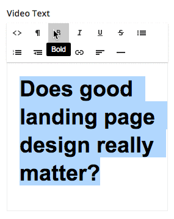

For whatever reason Redactor in older versions does not allow formatting to be applied to headers. After some Googling I was able to find a solution posted by Simon on StackOverflow. It turns out you can comment out one of the lines that guard against this and it works!

The following line prevents formatting actions taking affect on headers.
if (this.utils.isCurrentOrParent('PRE') || this.utils.isCurrentOrParentHeader()) return;
It needs to be changed to:
if (this.utils.isCurrentOrParent('PRE')) return;
Although we can make these changes directly to the source code there are downsides to this including maintainability.
Applying the changes via a patch is more preferable.
The below patch will allow formats (e.g. bold, italic, underline, strikethrough) to be applied to redactor headings.
$(document).ready(function() {
if ($.Redactor) {
var _inline = $.Redactor.prototype.inline;
$.Redactor.prototype.inline = function() {
var obj = _inline();
obj.format = function(tag, type, value) {
if (this.utils.isCurrentOrParent('PRE')) return;
//rest of method from source
return obj;
}
}